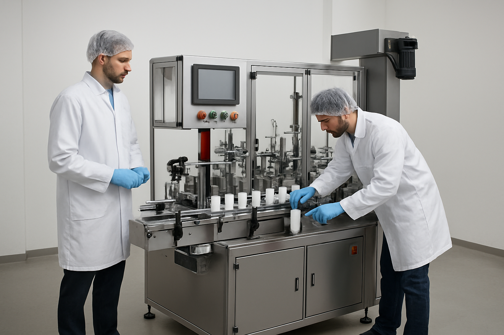

Quality First
At our company, quality is our top priority. With strong manufacturing expertise and the use of premium-quality spare parts, we ensure that every machine is built to deliver exceptional performance, durability, and reliability. Our commitment to strict quality standards and precision engineering allows us to provide machines that meet industry requirements and exceed customer expectations.
Customer First
Our customers are the foundation of our success. We focus on delivering dependable service, quick response support, and tailored solutions that match customer requirements. By maintaining transparency, trust, and continuous assistance, we ensure that our clients receive maximum value and smooth operational performance from our machines.

Expert Team
Our expert team of skilled engineers and dedicated service professionals works with precision and efficiency to ensure the highest quality standards in every machine we deliver. With strong technical knowledge and hands-on experience, our team focuses on innovation, performance optimization, and reliable service support. Their commitment ensures that our machines operate with maximum efficiency, durability, and customer satisfaction.